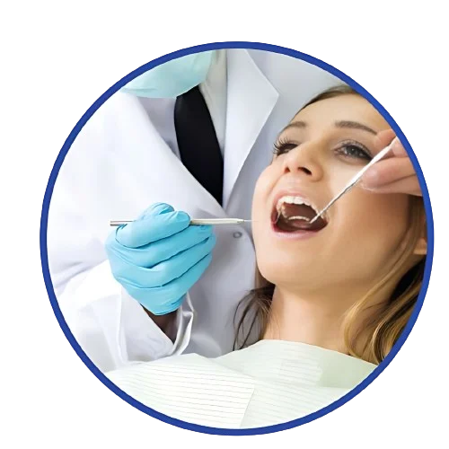

Braces exemplify the transformative power of change. At Pitner and Carroll Orthodontics, our dedicated team harnesses the effectiveness of braces to align teeth, correct bite issues, and enhance smiles through meticulous adjustments and innovative techniques.
Dr. Leslie Pitner and Dr. Marshall Carroll provide a range of orthodontic braces in Columbia, SC, tailored to address varying levels of misalignment, age groups, and lifestyles. With cutting-edge technology, our practice ensures you receive the beautiful, healthy, and functional smile you deserve.
Personalized Treatment Plans
At Pitner and Carroll Orthodontics, we believe that personalized care is fundamental to successful orthodontic treatment. Our orthodontists dedicate time to thoroughly assess each teenager's unique needs, ensuring that their treatment plan is customized to achieve optimal results.
Metal Braces
Metal braces are a traditional orthodontic option composed of high-quality stainless steel brackets and wires. They work by applying consistent pressure to the teeth, gradually guiding them into their correct positions over time.
Metal brackets are affixed to the front surface of each tooth, connected by an archwire. Elastic ties, also known as power chains, secure the wire in position. Regular adjustments at our clinic ensure that the braces maintain optimal pressure to effectively move teeth into their desired positions.
+
PROS
Efficient and versatile for various orthodontic issues.
No speech interference.
Available in a range of fun colors for elastic ties.
+
CONS
Traditional braces can indeed feel cumbersome and uncomfortable due to their metal brackets and wires. In contrast, Invisalign offers a vastly different experience. Crafted from smooth, comfortable plastic, these aligners gently nudge your teeth into alignment without the discomfort of periodic adjustments. Moreover, they seamlessly integrate into your lifestyle, letting you continue your daily activities without interruption.
Ceramic Braces
Ceramic braces function similarly to metal braces but use tooth-colored or clear ceramic brackets, providing a more discreet treatment option. This makes them less noticeable compared to traditional metal braces, appealing to individuals seeking a more aesthetically pleasing orthodontic solution.
Ceramic brackets operate similarly to metal brackets by exerting consistent pressure to shift teeth into place. To achieve a less noticeable appearance, they can utilize clear or tooth-colored elastic ties to connect with each other. This aesthetic option can blend more seamlessly with your natural tooth color, offering a discreet orthodontic treatment.
+
PROPS
Less visible due to tooth-colored or clear ceramic material.
Effective for correcting misaligned teeth and bite issues.
Available in various shades to match teeth color.
+
CONS
Higher cost compared to metal braces.
Larger brackets may cause gum sensitivity and make cleaning more
difficult.
Treatment may progress a little slower due to fragile nature.
Self-Ligating Braces
Self-ligating braces utilize a specialized bracket system that eliminates the need for elastic ties, thereby reducing friction and discomfort during orthodontic treatment.
These braces feature brackets with built-in clips that hold the archwire in place, allowing for smoother movement of the teeth. The absence of elastic ties makes them easier to clean and may contribute to shorter treatment times.
+
PROPS
Effective and affordable solution for misaligned teeth.
Less noticeable due to absence of elastic ties.
Easy to clean with fewer components.
+
CONS
Less pressure application compared to traditional braces.
Smaller brackets may result in slower treatment progress.

Lingual Braces
Lingual braces are placed behind the teeth, offering a discreet treatment option for patients who prefer to keep their orthodontic treatment hidden from view.
Lingual braces function similarly to traditional braces but are customized to fit the contours of the lingual surface of the teeth. They apply consistent pressure to gradually move the teeth into alignment while remaining virtually invisible from the front.
+
PROPS
Virtually invisible as they are placed behind the teeth.
Provide precise and customized treatment.
Suitable for adults with complex orthodontic needs.
+
CONS
Higher cost due to customization.
Potential discomfort and speech difficulties initially.
Treatment duration may be longer than conventional braces.
Clear Aligners (Invisalign)
Clear aligners, like Invisalign, are transparent plastic trays that fit snugly over the teeth, offering a discreet and removable option for orthodontic treatment.
Invisalign utilizes a series of custom-made aligners, each slightly
adjusted to apply gentle pressure to specific teeth, gradually
shifting them into alignment. Patients wear each set of aligners for
about two weeks before progressing to the next set.
+
PROPS
Nearly invisible for a discreet orthodontic treatment.
Removable for easy eating and oral hygiene maintenance.
Faster treatment for certain cases.
+
CONS
Not suitable for all orthodontic issues.
Requires discipline to wear aligners as prescribed.
Regular cleaning required to prevent staining.
Braces For Kids
Orthodontic treatment for children usually starts around the age of 7, when their permanent teeth begin to come in. At Pitner and Carroll Orthodontics, we provide early evaluations for children to monitor their dental development and intervene if needed.
Braces for kids are designed to correct misalignment issues, guide jaw growth, and create space for incoming permanent teeth. At Pitner and Carroll Orthodontics, we prioritize a gentle approach to ensure a comfortable experience for your child, laying the groundwork for a lifetime of healthy smiles.
Braces For Teens
Teenage years are an ideal time for orthodontic treatment because most permanent teeth have erupted by this stage. Braces for teens not only address misalignment issues but also enhance confidence and self-esteem during this crucial developmental period.
At Pitner and Carroll Orthodontics, we offer a range of braces options
tailored to teenagers' unique needs and preferences. From traditional
metal braces to clear aligners, we help teens achieve straighter teeth
and a smile they can be proud of.
Braces For Adults
Orthodontic treatment is not limited to children and teenagers—adults can also benefit from braces to improve their oral health and aesthetics. Whether you missed out on orthodontic treatment as a child or have experienced dental shifts over time, braces for adults offer a reliable solution for straightening teeth and correcting bite issues.
Our team understands the unique concerns of adult patients and offers
discreet braces options, such as clear aligners and lingual braces, to
fit seamlessly into your lifestyle. Invest in your smile and enjoy the
confidence that comes with a beautifully aligned set of teeth.
Choosing The Right Braces
1. Aesthetics
Consider your preference for the appearance of your braces. If you prefer a discreet option, lingual braces or clear aligners may be the best choice, as they are virtually invisible. Ceramic braces also offer a less noticeable appearance compared to traditional metal braces.
2. Treatment Complexity
The complexity of your orthodontic issues will influence the type of
braces that are most suitable for you. For mild to moderate issues,
clear aligners or ceramic braces may be effective. However, severe
misalignment or bite issues may require the precision of traditional
metal braces or lingual braces.
3. Oral Hygiene
Take into account your ability to maintain good oral hygiene during
orthodontic treatment. Traditional metal braces and self-ligating
braces may require extra effort for cleaning due to their design.
Clear aligners offer the advantage of being removable, allowing for
easier brushing and flossing.
4. Budget
Consider your budget when choosing braces. While traditional metal
braces are typically the most affordable option, ceramic braces and
lingual braces may come with a higher price tag due to their aesthetic
appeal and customization.
5. Comfort
Think about your comfort level with different types of braces. Lingual
braces and clear aligners may cause initial discomfort or speech
difficulties, while traditional metal braces may be associated with
minor discomfort during adjustments. Self-ligating braces offer
smaller brackets for enhanced comfort.
Consultation and Personalized Recommendations
Ultimately, the best way to determine the right braces for you is to schedule a consultation with one of our experienced orthodontists. During your consultation, we will evaluate your orthodontic needs, discuss your goals and preferences, and provide personalized recommendations for braces in Columbia, SC tailored to your unique situation.

.svg)

.webp)